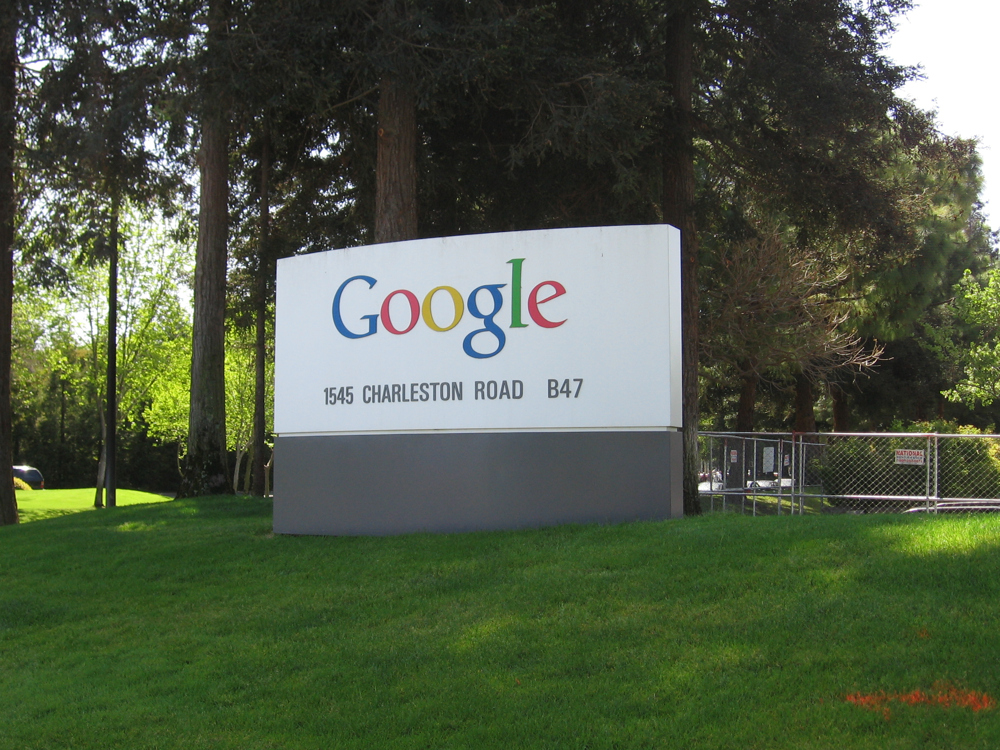
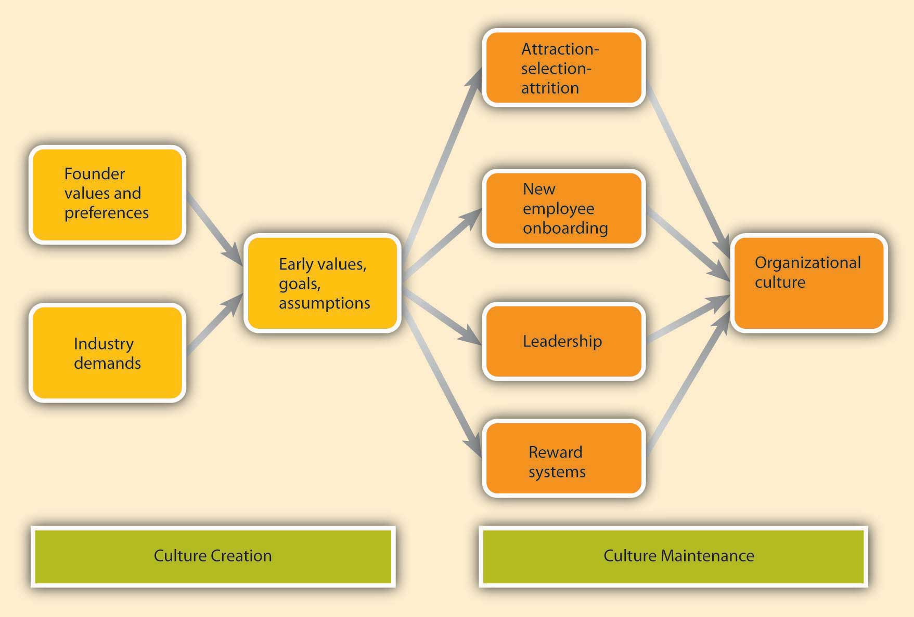
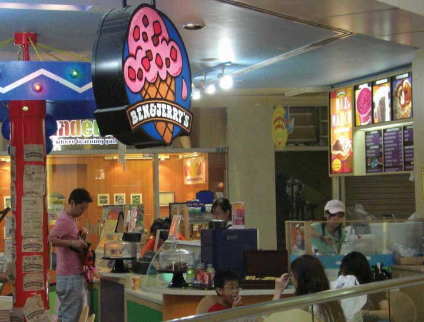
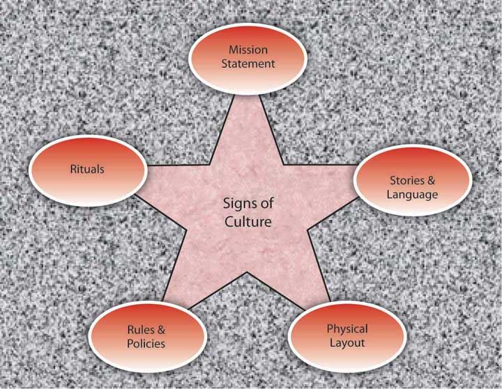
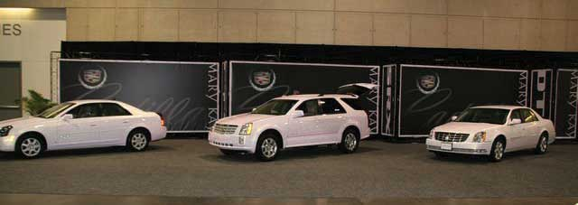
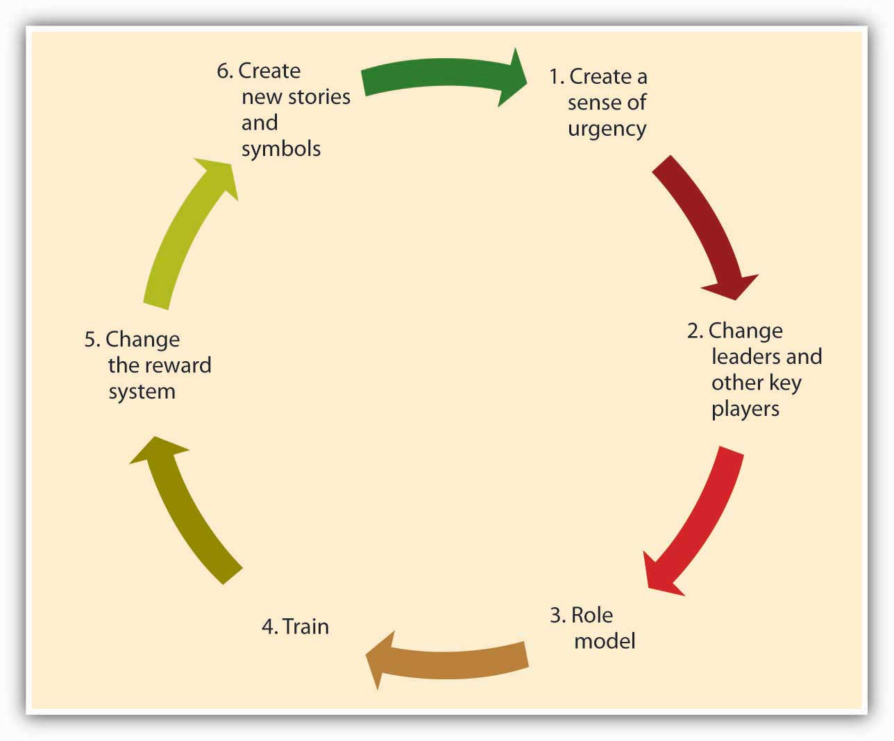

Reading this chapter will help you do the following:
Organizations, just like individuals, have their own personalities—more typically known as organizational cultures. Understanding how culture is created, communicated, and changed will help you to be a more effective manager. But first, let’s define organizational culture.
Figure 8.2 The P-O-L-C Framework

Figure 8.3
Source: http://en.wikipedia.org/wiki/File:Googleplex_Welcome_Sign.jpg by Ardo191.
Google (NASDAQ: GOOG) is one of the best-known and most admired companies around the world, so much so that “googling” is the term many use to refer to searching information on the Web. What started out as a student project by two Stanford University graduates—Larry Page and Sergey Brin—in 1996, Google became the most frequently used Web search engine on the Internet with 1 billion searches per day in 2009, as well as other innovative applications such as Gmail, Google Earth, Google Maps, and Picasa. Google grew from 10 employees working in a garage in Palo Alto to 10,000 employees operating around the world by 2009. What is the formula behind this success?
Google strives to operate based on solid principles that may be traced back to its founders. In a world crowded with search engines, they were probably the first company that put users first. Their mission statement summarizes their commitment to end-user needs: “To organize the world’s information and to make it universally accessible and useful.” While other companies were focused on marketing their sites and increasing advertising revenues, Google stripped the search page of all distractions and presented users with a blank page consisting only of a company logo and a search box. Google resisted pop-up advertising, because the company felt that it was annoying to end-users. They insisted that all their advertisements would be clearly marked as “sponsored links.” This emphasis on improving user experience and always putting it before making more money in the short term seems to have been critical to their success.
Keeping their employees happy is also a value they take to heart. Google created a unique work environment that attracts, motivates, and retains the best players in the field. Google was ranked as the number 1 “Best Place to Work For” by Fortune magazine in 2007 and number 4 in 2010. This is not surprising if one looks closer to how Google treats employees. On their Mountain View, California, campus called the “Googleplex,” employees are treated to free gourmet food options including sushi bars and espresso stations. In fact, many employees complain that once they started working for Google, they tend to gain 10 to 15 pounds! Employees have access to gyms, shower facilities, video games, on-site child care, and doctors. Google provides 4 months of paternal leave with 75% of full pay and offers $500 for take-out meals for families with a newborn. These perks create a place where employees feel that they are treated well and their needs are taken care of. Moreover, they contribute to the feeling that they are working at a unique and cool place that is different from everywhere else they may have worked.
In addition, Google encourages employee risk taking and innovation. How is this done? When a vice president in charge of the company’s advertising system made a mistake costing the company millions of dollars and apologized for the mistake, she was commended by Larry Page, who congratulated her for making the mistake and noting that he would rather run a company where they are moving quickly and doing too much, as opposed to being too cautious and doing too little. This attitude toward acting fast and accepting the cost of resulting mistakes as a natural consequence of working on the cutting edge may explain why the company is performing much ahead of competitors such as Microsoft and Yahoo! One of the current challenges for Google is to expand to new fields outside of their Web search engine business. To promote new ideas, Google encourages all engineers to spend 20% of their time working on their own ideas.
Google’s culture is reflected in their decision making as well. Decisions at Google are made in teams. Even the company management is in the hands of a triad: Larry Page and Sergey Brin hired Eric Schmidt to act as the CEO of the company, and they are reportedly leading the company by consensus. In other words, this is not a company where decisions are made by the senior person in charge and then implemented top down. It is common for several small teams to attack each problem and for employees to try to influence each other using rational persuasion and data. Gut feeling has little impact on how decisions are made. In some meetings, people reportedly are not allowed to say “I think…” but instead must say “the data suggest….” To facilitate teamwork, employees work in open office environments where private offices are assigned only to a select few. Even Kai-Fu Lee, the famous employee whose defection from Microsoft was the target of a lawsuit, did not get his own office and shared a cubicle with two other employees.
How do they maintain these unique values? In a company emphasizing hiring the smartest people, it is very likely that they will attract big egos that may be difficult to work with. Google realizes that its strength comes from its “small company” values that emphasize risk taking, agility, and cooperation. Therefore, they take their hiring process very seriously. Hiring is extremely competitive and getting to work at Google is not unlike applying to a college. Candidates may be asked to write essays about how they will perform their future jobs. Recently, they targeted potential new employees using billboards featuring brain teasers directing potential candidates to a Web site where they were subjected to more brain teasers. Each candidate may be interviewed by as many as eight people on several occasions. Through this scrutiny, they are trying to select “Googley” employees who will share the company’s values, perform at high levels, and be liked by others within the company.
Will this culture survive in the long run? It may be too early to tell, given that the company was only founded in 1998. The founders emphasized that their initial public offering (IPO) would not change their culture and they would not introduce more rules or change the way things are done in Google to please Wall Street. But can a public corporation really act like a start-up? Can a global giant facing scrutiny on issues including privacy, copyright, and censorship maintain its culture rooted in its days in a Palo Alto garage? Larry Page is quoted as saying, “We have a mantra: don’t be evil, which is to do the best things we know how for our users, for our customers, for everyone. So I think if we were known for that, it would be a wonderful thing.”
Case written by [citation redacted per publisher request]. Based on information from Elgin, B., Hof, R. D., & Greene, J. (2005, August 8). Revenge of the nerds—again. BusinessWeek. Retrieved April 30, 2010, from http://www.businessweek.com/technology/content/jul2005/tc20050728_5127_tc024.htm; Hardy, Q. (2005, November 14). Google thinks small. Forbes, 176(10); Lashinky, A. (2006, October 2). Chaos by design. Fortune, 154(7); Mangalindan, M. (2004, March 29). The grownup at Google: How Eric Schmidt imposed better management tactics but didn’t stifle search giant. Wall Street Journal, p. B1; Lohr, S. (2005, December 5). At Google, cube culture has new rules. New York Times. Retrieved April 30, 2010, from http://www.nytimes.com/2005/12/05/technology/05google.html; Schoeneman, D. (2006, December 31). Can Google come out to play? New York Times. Retrieved April 30, 2010, from http://www.nytimes.com/2006/12/31/fashion/31google.html; Warner, M. (2004, June). What your company can learn from Google. Business 2.0, 5(5).
Organizational cultureA system of shared assumptions, values, and beliefs showing people what is appropriate and inappropriate behavior. refers to a system of shared assumptions, values, and beliefs that show people what is appropriate and inappropriate behavior.Chatman, J. A., & Eunyoung Cha, S. (2003). Leading by leveraging culture. California Management Review, 45, 19–34; Kerr, J., & Slocum, J. W. (2005). Managing corporate culture through reward systems. Academy of Management Executive, 19, 130–138. These values have a strong influence on employee behavior as well as organizational performance. In fact, the term organizational culture was made popular in the 1980s when Peters and Waterman’s best-selling book In Search of Excellence made the argument that company success could be attributed to an organizational culture that was decisive, customer-oriented, empowering, and people-oriented. Since then, organizational culture has become the subject of numerous research studies, books, and articles. Organizational culture is still a relatively new concept. In contrast to a topic such as leadership, which has a history spanning several centuries, organizational culture is a young but fast-growing area within management.
Culture is largely invisible to individuals just as the sea is invisible to the fish swimming in it. Even though it affects all employee behaviors, thinking, and behavioral patterns, individuals tend to become more aware of their organization’s culture when they have the opportunity to compare it to other organizations. It is related to the second of the three facets that compose the P-O-L-C function of organizing. The organizing function involves creating and implementing organizational design decisions. The culture of the organization is closely linked to organizational design. For instance, a culture that empowers employees to make decisions could prove extremely resistant to a centralized organizational design, hampering the manager’s ability to enact such a design. However, a culture that supports the organizational structure (and vice versa) can be very powerful.
An organization’s culture may be one of its strongest assets or its biggest liability. In fact, it has been argued that organizations that have a rare and hard-to-imitate culture enjoy a competitive advantage.Barney, J. B. (1986). Organizational culture: Can it be a source of sustained competitive advantage? Academy of Management Review, 11, 656–665. In a survey conducted by the management consulting firm Bain & Company in 2007, worldwide business leaders identified corporate culture to be as important as corporate strategy for business success.Why culture can mean life or death for your organization. (September, 2007). HR Focus, 84, 9. This comes as no surprise to leaders of successful businesses, who are quick to attribute their company’s success to their organization’s culture.
Culture, or shared values within the organization, may be related to increased performance. Researchers found a relationship between organizational cultures and company performance, with respect to success indicators such as revenues, sales volume, market share, and stock prices.Kotter, J. P., & Heskett, J. L. (1992). Corporate Culture and Performance. New York: Free Press; Marcoulides, G. A., & Heck, R. H. (1993, May). Organizational culture and performance: Proposing and testing a model. Organizational Science, 4, 209–225. At the same time, it is important to have a culture that fits with the demands of the company’s environment. To the extent that shared values are proper for the company in question, company performance may benefit from culture.Arogyaswamy, B., & Byles, C. H. (1987). Organizational culture: Internal and external fits. Journal of Management, 13, 647–658. For example, if a company is in the high-tech industry, having a culture that encourages innovativeness and adaptability will support its performance. However, if a company in the same industry has a culture characterized by stability, a high respect for tradition, and a strong preference for upholding rules and procedures, the company may suffer because of its culture. In other words, just as having the “right” culture may be a competitive advantage for an organization, having the “wrong” culture may lead to performance difficulties, may be responsible for organizational failure, and may act as a barrier preventing the company from changing and taking risks.
In addition to having implications for organizational performance, organizational culture is an effective control mechanism dictating employee behavior. Culture is a more powerful way of controlling and managing employee behaviors than organizational rules and regulations. For example, when a company is trying to improve the quality of its customer service, rules may not be helpful, particularly when the problems customers present are unique. Instead, creating a culture of customer service may achieve better results by encouraging employees to think like customers, knowing that the company priorities in this case are clear: Keeping the customer happy is preferable to other concerns, such as saving the cost of a refund. Therefore, the ability to understand and influence organizational culture is an important item for managers to have in their tool kit when they are carrying out their controlling P-O-L-C function as well as their organizing function.
Figure 8.5 Three Levels of Organizational Culture
Source: Adapted from Schein, E. H. (1992). Organizational Culture and Leadership. San Francisco: Jossey-Bass.
Organizational culture consists of some aspects that are relatively more visible, as well as aspects that may lie below one’s conscious awareness. Organizational culture can be thought of as consisting of three interrelated levels.Schein, E. H. (1992). Organizational culture and leadership. San Francisco: Jossey-Bass.
At the deepest level, below our awareness, lie basic assumptionsBeliefs about human nature and reality that are taken for granted.. These assumptions are taken for granted and reflect beliefs about human nature and reality. At the second level, valuesShared principles, standards, and goals. exist. Values are shared principles, standards, and goals. Finally, at the surface, we have artifactsThe visible and tangible elements of culture., or visible, tangible aspects of organizational culture. For example, in an organization, a basic assumption employees and managers share might be that happy employees benefit their organizations. This might be translated into values such as egalitarianism, high-quality relationships, and having fun. The artifacts reflecting such values might be an executive “open door” policy, an office layout that includes open spaces and gathering areas equipped with pool tables, and frequent company picnics.
Understanding the organization’s culture may start from observing its artifacts: its physical environment, employee interactions, company policies, reward systems, and other observable characteristics. When you are interviewing for a position, observing the physical environment, how people dress, where they relax, and how they talk to others is definitely a good start to understanding the company’s culture. However, simply looking at these tangible aspects is unlikely to give a full picture of the organization, since an important chunk of what makes up culture exists below one’s degree of awareness. The values and, deeper, the assumptions that shape the organization’s culture can be uncovered by observing how employees interact and the choices they make, as well as by inquiring about their beliefs and perceptions regarding what is right and appropriate behavior.
Organizational culture is a system of shared assumptions, values, and beliefs that helps individuals understand which behaviors are and are not appropriate within an organization. Cultures can be a source of competitive advantage for organizations. Strong organizational cultures can be an organizing as well as a controlling mechanism for organizations. And finally, organizational culture consists of three levels: assumptions that are below the surface, values, and artifacts.
Which values characterize an organization’s culture? Even though culture may not be immediately observable, identifying a set of values that might be used to describe an organization’s culture helps us identify, measure, and manage culture more effectively. For this purpose, several researchers have proposed various culture typologies. One typology that has received a lot of research attention is the Organizational Culture Profile (OCP) where culture is represented by seven distinct values.Chatman, J. A., & Jehn, K. A. (1991). Assessing the relationship between industry characteristics and organizational culture: How different can you be? Academy of Management Journal, 37, 522–553; O’Reilly, C. A., III, Chatman, J. A., & Caldwell, D. F. (1991). People and organizational culture: A profile comparison approach to assessing person-organization fit. Academy of Management Journal, 34, 487–516.
Figure 8.6 Dimensions of Organizational Culture Profile (OCP)

Source: Adapted from information in O’Reilly, C. A., III, Chatman, J. A., & Caldwell, D. F. (1991). People and organizational culture: A profile comparison approach to assessing person-organization fit. Academy of Management Journal, 34, 487–516.
According to the OCP framework, companies that have innovative culturesCultures that are flexible, adaptable, and experiment with new ideas. are flexible, adaptable, and experiment with new ideas. These companies are characterized by a flat hierarchy and titles and other status distinctions tend to be downplayed. For example, W. L. Gore & Associates is a company with innovative products such as GORE-TEX® (the breathable fabric that is windproof and waterproof), Glade dental floss, and Elixir guitar strings, earning the company the distinction as the most innovative company in the United States by Fast Company magazine in 2004. W. L. Gore consistently manages to innovate and capture the majority of market share in a wide variety of industries, in large part because of its unique culture. In this company, employees do not have bosses in the traditional sense, and risk taking is encouraged by celebrating failures as well as successes.Deutschman, A. (2004, December). The fabric of creativity. Fast Company, 89, 54–62. Companies such as W. L. Gore, Genentech, and Google also encourage their employees to take risks by allowing engineers to devote 20% of their time to projects of their own choosing.
Companies with aggressive culturesCultures that value competitiveness and outperforming competitors. value competitiveness and outperforming competitors; by emphasizing this, they often fall short in corporate social responsibility. For example, Microsoft is often identified as a company with an aggressive culture. The company has faced a number of antitrust lawsuits and disputes with competitors over the years. In aggressive companies, people may use language such as “we will kill our competition.” In the past, Microsoft executives made statements such as “we are going to cut off Netscape’s air supply…Everything they are selling, we are going to give away,” and its aggressive culture is cited as a reason for getting into new legal troubles before old ones are resolved.Greene, J., Reinhardt, A., & Lowry, T. (2004, May 31). Teaching Microsoft to make nice? Business Week, 3885, 80–81; Schlender, B. (1998, June 22). Gates’s crusade. Fortune, 137, 30–32.
Figure 8.7

Microsoft, the company that Bill Gates co-founded, has been described as having an aggressive culture.
The OCP framework describes outcome-oriented culturesCultures that emphasize achievement, results, and action. as those that emphasize achievement, results, and action as important values. A good example of an outcome-oriented culture may be the electronics retailer Best Buy. Having a culture emphasizing sales performance, Best Buy tallies revenues and other relevant figures daily by department. Employees are trained and mentored to sell company products effectively, and they learn how much money their department made every day.Copeland, M. V. (2004, July). Best Buy’s selling machine. Business 2.0, 5, 92–102. In 2005, the company implemented a Results Oriented Work Environment (ROWE) program that allows employees to work anywhere and anytime; they are evaluated based on results and fulfillment of clearly outlined objectives.Thompson, J. (2005, September). The time we waste. Management Today, 44–47. Outcome-oriented cultures hold employees as well as managers accountable for success and use systems that reward employee and group output. In these companies, it is more common to see rewards tied to performance indicators as opposed to seniority or loyalty. Research indicates that organizations that have a performance-oriented culture tend to outperform companies that are lacking such a culture.Nohria, N., Joyce, W., & Roberson, B. (2003, July). What really works. Harvard Business Review, 81, 42–52. At the same time, when performance pressures lead to a culture where unethical behaviors become the norm, individuals see their peers as rivals, and short-term results are rewarded, the resulting unhealthy work environment serves as a liability.Probst, G., & Raisch, S. (2005). Organizational crisis: The logic of failure. Academy of Management Executive, 19, 90–105.
Stable culturesPredictable, rule-oriented, and bureaucratic. are predictable, rule-oriented, and bureaucratic. When the environment is stable and certain, these cultures may help the organization to be effective by providing stable and constant levels of output.Westrum, R. (2004, August). Increasing the number of guards at nuclear power plants. Risk Analysis: An International Journal, 24, 959–961. These cultures prevent quick action and, as a result, may be a misfit to a changing and dynamic environment. Public sector institutions may be viewed as stable cultures. In the private sector, Kraft Foods is an example of a company with centralized decision making and rule orientation that suffered as a result of the culture-environment mismatch.Thompson, S. (2006, September 18). Kraft CEO slams company, trims marketing staff. Advertising Age, 77, 3–62. Its bureaucratic culture is blamed for killing good ideas in early stages and preventing the company from innovating. When the company started a change program to increase the agility of its culture, one of its first actions was to fight bureaucracy with more bureaucracy: The new position of vice president of “business process simplification” was created but was later eliminated.Boyle, M. (2004, November 15). Kraft’s arrested development. Fortune, 150, 144; Thompson, S. (2005, February 28). Kraft simplification strategy anything but. Advertising Age, 76, 3–63; Thompson, S. (2006, September 18). Kraft CEO slams company, trims marketing staff. Advertising Age, 77, 3–62.
People-oriented culturesCultures that value fairness, supportiveness, and respecting individual rights. value fairness, supportiveness, and respecting individual rights. In these organizations, there is a greater emphasis on and expectation of treating people with respect and dignity.Erdogan, B., Liden, R. C., & Kraimer, M. L. (2006). Justice and leader-member exchange: The moderating role of organizational culture. Academy of Management Journal, 49, 395–406. One study of new employees in accounting companies found that employees, on average, stayed 14 months longer in companies with people-oriented cultures.Sheridan, J. (1992). Organizational culture and employee retention. Academy of Management Journal, 35, 1036–1056. Starbucks is an example of a people-oriented culture. The company pays employees above minimum wage, offers health care and tuition reimbursement benefits to its part-time as well as full-time employees, and has creative perks such as weekly free coffee for all associates. As a result of these policies, the company benefits from a turnover rate lower than the industry average.Weber, G. (2005, February). Preserving the counter culture. Workforce Management, 84, 28–34; Motivation secrets of the 100 best employers. (2003, October). HR Focus, 80, 1–15.
Companies with a team-oriented cultureCultures that are collaborative and emphasize cooperation among employees. are collaborative and emphasize cooperation among employees. For example, Southwest Airlines facilitates a team-oriented culture by cross-training its employees so that they are capable of helping one another when needed. The company also emphasizes training intact work teams.Bolino, M. C., & Turnley, W. H. (2003). Going the extra mile: Cultivating and managing employee citizenship behavior. Academy of Management Executive, 17, 60–71. In Southwest’s selection process, applicants who are not viewed as team players are not hired as employees.Miles, S. J., & Mangold, G. (2005). Positioning Southwest Airlines through employee branding. Business Horizons, 48, 535–545. In team-oriented organizations, members tend to have more positive relationships with their coworkers and particularly with their managers.Erdogan, B., Liden, R. C., & Kraimer, M. L. (2006). Justice and leader-member exchange: The moderating role of organizational culture. Academy of Management Journal, 49, 395–406.
Figure 8.8

The growth in the number of passengers flying with Southwest Airlines from 1973 until 2007 when Southwest surpassed American Airlines as the most flown U.S. airline. While price has played a role in this, their emphasis on service has been a key piece of their culture and competitive advantage.
Source: Adapted from http://upload.wikimedia.org/wikipedia/commons/6/69/Southwest-airlines-passengers.jpg
Organizations with a detail-oriented cultureCultures that emphasize precision and paying attention to details. are characterized in the OCP framework as emphasizing precision and paying attention to details. Such a culture gives a competitive advantage to companies in the hospitality industry by helping them differentiate themselves from others. For example, Four Seasons and Ritz Carlton are among hotels who keep records of all customer requests such as which newspaper the guest prefers or what type of pillow the customer uses. This information is put into a computer system and used to provide better service to returning customers. Any requests hotel employees receive, as well as overhear, might be entered into the database to serve customers better.
A strong cultureA culture that is shared by organizational members. is one that is shared by organizational membersArogyaswamy, B., & Byles, C. M. (1987). Organizational culture: Internal and external fits. Journal of Management, 13, 647–658; Chatman, J. A., & Eunyoung Cha, S. (2003). Leading by leveraging culture. California Management Review, 45, 20–34.—that is, a culture in which most employees in the organization show consensus regarding the values of the company. The stronger a company’s culture, the more likely it is to affect the way employees think and behave. For example, cultural values emphasizing customer service will lead to higher-quality customer service if there is widespread agreement among employees on the importance of customer-service-related values.Schneider, B., Salvaggio, A., & Subirats, M. (2002). Climate strength: A new direction for climate research. Journal of Applied Psychology, 87, 220–229.
It is important to realize that a strong culture may act as an asset or a liability for the organization, depending on the types of values that are shared. For example, imagine a company with a culture that is strongly outcome-oriented. If this value system matches the organizational environment, the company may perform well and outperform its competitors. This is an asset as long as members are behaving ethically. However, a strong outcome-oriented culture coupled with unethical behaviors and an obsession with quantitative performance indicators may be detrimental to an organization’s effectiveness. Enron is an extreme example of this dysfunctional type of strong culture.
One limitation of a strong culture is the difficulty of changing it. In an organization where certain values are widely shared, if the organization decides to adopt a different set of values, unlearning the old values and learning the new ones will be a challenge because employees will need to adopt new ways of thinking, behaving, and responding to critical events. For example, Home Depot had a decentralized, autonomous culture where many business decisions were made using “gut feeling” while ignoring the available data. When Robert Nardelli became CEO of the company in 2000, he decided to change its culture starting with centralizing many of the decisions that were previously left to individual stores. This initiative met with substantial resistance, and many high-level employees left during Nardelli’s first year. Despite getting financial results such as doubling the sales of the company, many of the changes he made were criticized. He left the company in January 2007.Charan, R. (2006, April). Home Depot’s blueprint for culture change. Harvard Business Review, 84, 60–70; Herman, J., & Wernle, B. (2007, August 13). The book on Bob Nardelli: Driven, demanding. Automotive News, 81, 42.
Figure 8.10

Walt Disney created a strong culture at his company that has evolved since its founding in 1923.
A strong culture may also be a liability during a merger. During mergers and acquisitions, companies inevitably experience a clash of cultures, as well as a clash of structures and operating systems. Culture clash becomes more problematic if both parties have unique and strong cultures. For example, during the merger of Daimler-Benz with Chrysler to create DaimlerChrysler, the differing strong cultures of each company acted as a barrier to effective integration. Daimler had a strong engineering culture that was more hierarchical and emphasized routinely working long hours. Daimler employees were used to being part of an elite organization, evidenced by flying first class on all business trips. However, Chrysler had a sales culture where employees and managers were used to autonomy, working shorter hours, and adhering to budget limits that meant only the elite flew first class. The different ways of thinking and behaving in these two companies introduced a number of unanticipated problems during the integration process.Badrtalei, J., & Bates, D. L. (2007). Effect of organizational cultures on mergers and acquisitions: The case of DaimlerChrysler. International Journal of Management, 24, 303–317; Bower, J. L. (2001). Not all M&As are alike—and that matters. Harvard Business Review, 79, 92–101.
So far, we have assumed that a company has a single culture that is shared throughout the organization. In reality there might be multiple cultures within the organization. For example, people working on the sales floor may experience a different culture from that experienced by people working in the warehouse. Cultures that emerge within different departments, branches, or geographic locations are called subculturesA set of values unique to a limited cross section of the organization.. Subcultures may arise from the personal characteristics of employees and managers, as well as the different conditions under which work is performed. In addition to understanding the broader organization’s values, managers will need to make an effort to understand subculture values to see their effect on workforce behavior and attitudes.
Sometimes, a subculture may take the form of a countercultureShared values and beliefs that are in direct opposition to the values of the broader organizational culture.. Defined as shared values and beliefs that are in direct opposition to the values of the broader organizational culture,Kerr, J., & Slocum, J. W., Jr. (2005). Managing corporate culture through reward systems. Academy of Management Executive, 19, 130–138. countercultures are often shaped around a charismatic leader. For example, within a largely bureaucratic organization, an enclave of innovativeness and risk taking may emerge within a single department. A counterculture may be tolerated by the organization as long as it is bringing in results and contributing positively to the effectiveness of the organization. However, its existence may be perceived as a threat to the broader organizational culture. In some cases, this may lead to actions that would take away the autonomy of the managers and eliminate the counterculture.
Culture can be understood in terms of seven different culture dimensions, depending on what is most emphasized within the organization. For example, innovative cultures are flexible, adaptable, and experiment with new ideas, while stable cultures are predictable, rule-oriented, and bureaucratic. Strong cultures can be an asset or liability for an organization but can be challenging to change. Multiple cultures may coexist in a single organization in the form of subcultures and countercultures.
Where do cultures come from? Understanding this question is important in understanding how they can be changed. An organization’s culture is shaped as the organization faces external and internal challenges and learns how to deal with them. When the organization’s way of doing business provides a successful adaptation to environmental challenges and ensures success, those values are retained. These values and ways of doing business are taught to new members as the way to do business.Schein, E. H. (1992). Organizational Culture and Leadership. San Francisco: Jossey-Bass.
The factors that are most important in the creation of an organization’s culture include founders’ values, preferences, and industry demands.
Figure 8.11 Model Describing How Cultures Are Created and Maintained
A company’s culture, particularly during its early years, is inevitably tied to the personality, background, and values of its founder or founders, as well as their vision for the future of the organization. When entrepreneurs establish their own businesses, the way they want to do business determines the organization’s rules, the structure set up in the company, and the people they hire to work with them. For example, some of the existing corporate values of the ice cream company Ben & Jerry’s Homemade Holdings Inc. can easily be traced to the personalities of its founders Ben Cohen and Jerry Greenfield. In 1978, the two high school friends opened up their first ice-cream shop in a renovated gas station in Burlington, Vermont. Their strong social convictions led them to buy only from the local farmers and devote a certain percentage of their profits to charities. The core values they instilled in their business can still be observed in the current company’s devotion to social activism and sustainability, its continuous contributions to charities, use of environmentally friendly materials, and dedication to creating jobs in low-income areas. Even though Unilever acquired the company in 2000, the social activism component remains unchanged and Unilever has expressed its commitment to maintaining it.Kiger, P. J. (April, 2005). Corporate crunch. Workforce Management, 84, 32–38; Rubis, L., Fox, A., Pomeroy, A., Leonard, B., Shea, T. F., Moss, D., et al. (2005). 50 for history. HR Magazine, 50, 13, 10–24; Smalley, S. (2007, December 3). Ben & Jerry’s bitter crunch. Newsweek, 150, 50.
Founder values become part of the corporate culture to the degree to which they help the company be successful. For example, the social activism of Ben and Jerry’s was instilled in the company because the founders strongly believed in these issues. However, these values probably would not be surviving 3 decades later if they had not helped the company in its initial stages. In the case of Ben and Jerry’s, these values helped distinguish their brand from larger corporate brands and attracted a loyal customer base. Thus, by providing a competitive advantage, these values were retained as part of the corporate culture and were taught to new members as the right way to do business.
Figure 8.12
Ben & Jerry’s has locations around the world, including this store in Singapore.
While founders undoubtedly exert a powerful influence over corporate cultures, the industry characteristics also play a role. Companies within the same industry can sometimes have widely differing cultures. At the same time, the industry characteristics and demands act as a force to create similarities among organizational cultures. For example, despite some differences, many companies in the insurance and banking industries are stable and rule-oriented, many companies in the high-tech industry have innovative cultures, and those in nonprofit industry may be people-oriented. If the industry is one with a large number of regulatory requirements—for example, banking, health care, and high-reliability (such as nuclear power plant) industries—then we might expect the presence of a large number of rules and regulations, a bureaucratic company structure, and a stable culture. The industry influence over culture is also important to know because this shows that it may not be possible to imitate the culture of a company in a different industry, even though it may seem admirable to outsiders.
As a company matures, its cultural values are refined and strengthened. The early values of a company’s culture exert influence over its future values. It is possible to think of organizational culture as an organism that protects itself from external forces. Organizational culture determines what types of people are hired by an organization and what types of people are left out. Moreover, once new employees are hired, the company assimilates new employees and teaches them the way things are done in the organization. We call these processes attraction-selection-attrition and onboarding processes. We will also examine the role of leaders and reward systems in shaping and maintaining an organization’s culture.
Organizational culture is maintained through a process known as attraction-selection-attrition (ASA). First, employees are attracted to organizations where they will fit in. Someone who has a competitive nature may feel comfortable in and may prefer to work in a company where interpersonal competition is the norm. Others may prefer to work in a team-oriented workplace. Research shows that employees with different personality traits find different cultures attractive. For example, out of the Big Five personality traits, employees who demonstrate neurotic personalities were less likely to be attracted to innovative cultures, whereas those who had openness to experience were more likely to be attracted to innovative cultures.Judge, T. A., & Cable, D. M. (1997). Applicant personality, organizational culture, and organization attraction. Personnel Psychology, 50, 359–394.
Of course, this process is imperfect, and value similarity is only one reason a candidate might be attracted to a company. There may be other, more powerful attractions such as good benefits. At this point in the process, the second component of the ASA framework prevents them from getting in: selection. Just as candidates are looking for places where they will fit in, companies are also looking for people who will fit into their current corporate culture. Many companies are hiring people for fit with their culture, as opposed to fit with a certain job. For example, Southwest Airlines prides itself for hiring employees based on personality and attitude rather than specific job-related skills, which they learn after they are hired. Companies use different techniques to weed out candidates who do not fit with corporate values. For example, Google relies on multiple interviews with future peers. By introducing the candidate to several future coworkers and learning what these coworkers think of the candidate, it becomes easier to assess the level of fit.
Even after a company selects people for person-organization fit, there may be new employees who do not fit in. Some candidates may be skillful in impressing recruiters and signal high levels of culture fit even though they do not necessarily share the company’s values. In any event, the organization is eventually going to eliminate candidates eventually who do not fit in through attrition. Attrition refers to the natural process where the candidates who do not fit in will leave the company. Research indicates that person-organization misfit is one of the important reasons for employee turnover.Kristof-Brown, A. L., Zimmerman, R. D., & Johnson, E. C. (2005). Consequences of individuals’ fit at work: a meta-analysis of person–job, person–organization, person–group, and person–supervisor fit. Personnel Psychology, 58, 281–342; O’Reilly, C. A., III, Chatman, J. A., & Caldwell, D. F. (1991). People and organizational culture: A profile comparison approach to assessing person-organization fit. Academy of Management Journal, 34, 487–516.
Because of the ASA process, the company attracts, selects, and retains people who share its core values, whereas those people who are different in core values will be excluded from the organization either during the hiring process or later on through naturally occurring turnover. Thus, organizational culture will act as a self-defending organism where intrusive elements are kept out. Supporting the existence of such self-protective mechanisms, research shows that organizations demonstrate a certain level of homogeneity regarding personalities and values of organizational members.Giberson, T. R., Resick, C. J., & Dickson, M. W. (2005). Embedding leader characteristics: An examination of homogeneity of personality and values in organizations. Journal of Applied Psychology, 90, 1002–1010.
Another way in which an organization’s values, norms, and behavioral patterns are transmitted to employees is through onboardingThe process through which new employees learn the attitudes, knowledge, skills, and behaviors required to function effectively within an organization. (also referred to as the organizational socialization process). Onboarding refers to the process through which new employees learn the attitudes, knowledge, skills, and behaviors required to function effectively within an organization. If an organization can successfully socialize new employees into becoming organizational insiders, new employees will feel accepted by their peers and confident regarding their ability to perform; they will also understand and share the assumptions, norms, and values that are part of the organization’s culture. This understanding and confidence in turn translate into more effective new employees who perform better and have higher job satisfaction, stronger organizational commitment, and longer tenure within the company.Bauer, T. N., Bodner, T., Erdogan, B., Truxillo, D. M., & Tucker, J. S. (2007). Newcomer adjustment during organizational socialization: A meta-analytic review of antecedents, outcomes, and methods. Journal of Applied Psychology, 92, 707–721. Organizations engage in different activities to facilitate onboarding, such as implementing orientation programs or matching new employees with mentors.
New employees who are proactive, seek feedback, and build strong relationships tend to be more successful than those who do not. Bauer, T. N., & Green, S. G. (1998). Testing the combined effects of newcomer information seeking and manager behavior on socialization. Journal of Applied Psychology, 83, 72–83; Kammeyer-Mueller, J. D., & Wanberg, C. R. (2003). Unwrapping the organizational entry process: Disentangling multiple antecedents and their pathways to adjustment. Journal of Applied Psychology, 88, 779–794; Wanberg, C. R., & Kammeyer-Mueller, J. D. (2000). Predictors and outcomes of proactivity in the socialization process. Journal of Applied Psychology, 85, 373–385. For example, feedback seeking helps new employees. Especially on a first job, a new employee can make mistakes or gaffes and may find it hard to understand and interpret the ambiguous reactions of coworkers. By actively seeking feedback, new employees may find out sooner rather than later any behaviors that need to be changed and gain a better understanding of whether their behavior fits with the company culture and expectations.
Relationship building or networking (a facet of the organizing function) is another important behavior new employees may demonstrate. Particularly when a company does not have a systematic approach to onboarding, it becomes more important for new employees to facilitate their own onboarding by actively building relationships. According to one estimate, 35% of managers who start a new job fail in the new job and either voluntarily leave or are fired within one and a half years. Of these, over 60% report not being able to form effective relationships with colleagues as the primary reason for this failure.Fisher, A. (2005, March 7). Starting a new job? Don’t blow it. Fortune, 151, 48.
Many organizations, including Microsoft, Kellogg Company, and Bank of America take a more structured and systematic approach to new employee onboarding, while others follow a “sink or swim” approach where new employees struggle to figure out what is expected of them and what the norms are.
A formal orientation programA program used to indoctrinate new employees to the company culture, as well as introducing them to their new jobs and colleagues. indoctrinates new employees to the company culture, as well as introducing them to their new jobs and colleagues. An orientation program has a role in making new employees feel welcome in addition to imparting information that may help them be successful in their new jobs. Many large organizations have formal orientation programs consisting of lectures, videotapes, and written material, while some may follow more informal approaches. According to one estimate, most orientations last anywhere from one to five days, and some companies are currently switching to a computer-based orientation. Ritz Carlton, the company ranked number 1 in Training magazine’s 2007 top 125 list, uses a very systematic approach to employee orientation and views orientation as the key to retention. In the 2-day classroom orientation, employees spend time with management, dine in the hotel’s finest restaurant, and witness the attention to customer service detail firsthand. During these two days, they are introduced to the company’s intensive service standards, team orientation, and its own language. Later, on their 21st day they are tested on the company’s service standards and are certified.Durett, J. (2006, March 1). Technology opens the door to success at Ritz-Carlton. Retrieved November 15, 2008, from http://www.managesmarter.com/msg/search/article_display.jsp?vnu_content_id=1002157749; Elswick, J. (2000, February). Puttin’ on the Ritz: Hotel chain touts training to benefit its recruiting and retention. Employee Benefit News, 14, 9; The Ritz-Carlton Company: How it became a “legend” in service. (2001, January–February). Corporate University Review, 9, 16. Research shows that formal orientation programs are helpful in teaching employees about the goals and history of the company, as well as communicating the power structure. Moreover, these programs may also help with a new employee’s integration to the team. However, these benefits may not be realized to the same extent in computer-based orientations. In fact, compared to those taking part in a regular, face-to-face orientation, those undergoing a computer-based orientation were shown to have lower understanding of their job and the company, indicating that different formats of orientations may not substitute for each other.Klein, H. J., & Weaver, N. A. (2000). The effectiveness of an organizational level orientation training program in the socialization of new employees. Personnel Psychology, 53, 47–66; Moscato, D. (2005, April). Using technology to get employees on board. HR Magazine, 50, 107–109; Wesson, M. J., & Gogus, C. I. (2005). Shaking hands with a computer: An examination of two methods of organizational newcomer orientation. Journal of Applied Psychology, 90, 1018–1026.
One of the most important ways in which organizations can help new employees adjust to a company and a new job is through organizational insiders—namely, supervisors, coworkers, and mentors. Leaders have a key influence over onboarding and the information and support they provide determine how quickly employees learn about the company politics and culture, while coworker influence determines the degree to which employees adjust to their teams. MentorsA trusted person who provides an employee with advice and support regarding career-related matters. can be crucial to helping new employees adjust by teaching them the ropes of their jobs and how the company really operates. A mentor is a trusted person who provides an employee with advice and support regarding career-related matters. Although a mentor can be any employee or manager who has insights that are valuable to the new employee, mentors tend to be relatively more experienced than their protégés. Mentoring can occur naturally between two interested individuals or organizations can facilitate this process by having formal mentoring programs. These programs may successfully bring together mentors and protégés who would not come together otherwise.
Research indicates that the existence of these programs does not guarantee their success, and there are certain program characteristics that may make these programs more effective. For example, when mentors and protégés feel that they had input in the mentor-protégé matching process, they tend to be more satisfied with the arrangement. Moreover, when mentors receive training beforehand, the outcomes of the program tend to be more positive.Allen, T. D., Eby, L. T., & Lentz, E. (2006). Mentorship behaviors and mentorship quality associated with formal mentoring programs: Closing the gap between research and practice. Journal of Applied Psychology, 91, 567–578. Because mentors may help new employees interpret and understand the company’s culture, organizations may benefit from selecting mentors who personify the company’s values. Thus, organizations may need to design these programs carefully to increase their chance of success.
Leaders are instrumental in creating and changing an organization’s culture. There is a direct correspondence between the leader’s style and an organization’s culture. For example, when leaders motivate employees through inspiration, corporate culture tends to be more supportive and people-oriented. When leaders motivate by making rewards contingent on performance, the corporate culture tended to be more performance-oriented and competitive.Sarros, J. C., Gray, J., & Densten, I. L. (2002). Leadership and its impact on organizational culture. International Journal of Business Studies, 10, 1–26. In these and many other ways, what leaders do directly influences the cultures of their organizations. This is a key point for managers to consider as they carry out their leading P-O-L-C function.
Part of the leader’s influence over culture is through role modeling. Many studies have suggested that leader behavior, the consistency between organizational policy and leader actions, and leader role modeling determine the degree to which the organization’s culture emphasizes ethics.Driscoll, K., & McKee, M. (2007). Restorying a culture of ethical and spiritual values: A role for leader storytelling. Journal of Business Ethics, 73, 205–217. The leader’s own behaviors will signal to individuals what is acceptable behavior and what is unacceptable. In an organization in which high-level managers make the effort to involve others in decision making and seek opinions of others, a team-oriented culture is more likely to evolve. By acting as role models, leaders send signals to the organization about the norms and values that are expected to guide the actions of its members.
Leaders also shape culture by their reactions to the actions of others around them. For example, do they praise a job well done or do they praise a favored employee regardless of what was accomplished? How do they react when someone admits to making an honest mistake? What are their priorities? In meetings, what types of questions do they ask? Do they want to know what caused accidents so that they can be prevented, or do they seem more concerned about how much money was lost because of an accident? Do they seem outraged when an employee is disrespectful to a coworker, or does their reaction depend on whether they like the harasser? Through their day-to-day actions, leaders shape and maintain an organization’s culture.
Finally, the company culture is shaped by the type of reward systems used in the organization and the kinds of behaviors and outcomes it chooses to reward and punish. One relevant element of the reward system is whether the organization rewards behaviors or results. Some companies have reward systems that emphasize intangible elements of performance as well as more easily observable metrics. In these companies, supervisors and peers may evaluate an employee’s performance by assessing the person’s behaviors as well as the results. In such companies, we may expect a culture that is relatively people- or team-oriented, and employees act as part of a family.Kerr, J., & Slocum, J. W., Jr. (2005). Managing corporate culture through reward systems. Academy of Management Executive, 19, 130–138. However, in companies in which goal achievement is the sole criterion for reward, there is a focus on measuring only the results without much regard to the process. In these companies, we might observe outcome-oriented and competitive cultures. Whether the organization rewards performance or seniority would also make a difference in culture. When promotions are based on seniority, it would be difficult to establish a culture of outcome orientation. Finally, the types of behaviors that are rewarded or ignored set the tone for the culture. Which behaviors are rewarded, which ones are punished, and which are ignored will determine how a company’s culture evolves. A reward system is one tool managers can wield when undertaking the controlling function.
How do you find out about a company’s culture? We emphasized earlier that culture influences the way members of the organization think, behave, and interact with one another. Thus, one way of finding out about a company’s culture is by observing employees or interviewing them. At the same time, culture manifests itself in some visible aspects of the organization’s environment. In this section, we discuss five ways in which culture shows itself to observers and employees.
Figure 8.13 Visual Elements of Culture
A mission statementA statement of purpose, describing who the company is and what it does. is a statement of purpose, describing who the company is and what it does. It serves an important function for organizations as part of the first facet of the planning P-O-L-C function. But, while many companies have mission statements, they do not always reflect the company’s values and its purpose. An effective mission statement is well known by employees, is transmitted to all employees starting from their first day at work, and influences employee behavior.
Some mission statements reflect who the company wants to be as opposed to who they actually are. If the mission statement does not affect employee behavior on a day-to-day basis, it has little usefulness as a tool for understanding the company’s culture. Enron provided an often-cited example of a disconnect between a company’s mission statement and how the company actually operated. Their missions and values statement started with “As a partner in the communities in which we operate, Enron believes it has a responsibility to conduct itself according to certain basic principles.” Their values statement included such ironic declarations as “We do not tolerate abusive or disrespectful treatment. Ruthlessness, callousness and arrogance don’t belong here.”Kunen, J. S. (2002, January 19). Enron’s vision (and values) thing. The New York Times, 19.
A mission statement that is taken seriously and widely communicated may provide insights into the corporate culture. For example, the Mayo Clinic’s mission statement is “The needs of the patient come first.” This mission statement evolved from the founders who are quoted as saying, “The best interest of the patient is the only interest to be considered.” Mayo Clinics have a corporate culture that puts patients first. For example, no incentives are given to physicians based on the number of patients they see. Because doctors are salaried, they have no interest in retaining a patient for themselves, and they refer the patient to other doctors when needed.Jarnagin, C., & Slocum, J. W., Jr. (2007). Creating corporate cultures through mythopoetic leadership. Organizational Dynamics, 36, 288–302. Wal-Mart may be another example of a company that lives its mission statement and therefore its mission statement may give hints about its culture: “Saving people money so they can live better.”Wal-Mart Stores, Inc. (2008). Investor frequently asked questions. Retrieved November 20, 2008, from http://walmartstores.com/Investors/7614.aspx
Figure 8.14
Tradition is important at Mary Kay Cosmetics. Pink Cadillacs are given to top performers at large annual events.
RitualsRepetitive activities within an organization that have symbolic meaning. refer to repetitive activities within an organization that have symbolic meaning.Anand, N. (2005). Blackwell Encyclopedic Dictionary of Management. Cambridge: Wiley. Usually rituals have their roots in the history of a company’s culture. They create camaraderie and a sense of belonging among employees. They also serve to teach employees corporate values and create identification with the organization. For example, at the cosmetics firm Mary Kay Inc., employees attend ceremonies recognizing their top salespeople with an award of a new car—traditionally a pink Cadillac. These ceremonies are conducted in large auditoriums where participants wear elaborate evening gowns and sing company songs that create emotional excitement. During this ritual, employees feel a connection to the company culture and its values such as self-determination, willpower, and enthusiasm.Jarnagin, C., & Slocum, J. W., Jr. (2007). Creating corporate cultures through mythopoetic leadership. Organizational Dynamics, 36, 288–302. Another example of rituals is the Saturday morning meetings of Wal-Mart. This ritual was first created by the company founder Sam Walton, who used these meetings to discuss which products and practices were doing well and which required adjustment. He was able to use this information to make changes in Wal-Mart’s stores before the start of the week, which gave him a competitive advantage over rival stores who would make their adjustments based on weekly sales figures during the middle of the following week. Today, hundreds of Wal-Mart associates attend the Saturday morning meetings in the Bentonville, Arkansas, headquarters. The meetings, which run from 7:00 a.m. to 9:30 a.m., start and end with the Wal-Mart cheer; the agenda includes a discussion of weekly sales figures and merchandising tactics. As a ritual, the meetings help maintain a small-company atmosphere, ensure employee involvement and accountability, communicate a performance orientation, and demonstrate taking quick action.Schlender, B. (2005, April 18). Wal-Mart’s $288 billion meeting. Fortune, 151, 90–106; Wal around the world. (2001, December 8). Economist, 361, 55–57.
Another way in which an observer may find out about a company’s culture is to examine its rules and policies. Companies create rules to determine acceptable and unacceptable behavior and, thus, the rules that exist in a company will signal the type of values it has. Policies about issues such as decision making, human resources, and employee privacy reveal what the company values and emphasizes. For example, a company that has a policy such as “all pricing decisions of merchandise will be made at corporate headquarters” is likely to have a centralized culture that is hierarchical, as opposed to decentralized and empowering. The presence or absence of policies on sensitive issues such as English-only rules, bullying and unfair treatment of others, workplace surveillance, open-door policies, sexual harassment, workplace romances, and corporate social responsibility all provide pieces of the puzzle that make up a company’s culture. This highlights how interrelated the P-O-L-C functions are in practice. Through rules and policies, the controlling function affects the organization’s culture, a facet of organizing.
Below are scenarios of critical decisions you may need to make as a manager one day. Read each question and select one response from each pair of statements. Then, think about the effect your choice would have on the company’s culture (your organizing function) as well as on your controlling function.
Your company needs to lay off 10 people. Would you
You’re asked to establish a dress code. Would you
You need to monitor employees during work hours. Would you
You’re preparing performance appraisals. Would you
Who will be promoted? Would you promote individuals based on
A company’s building, layout of employee offices, and other workspaces communicate important messages about a company’s culture. For example, visitors walking into the Nike campus in Beaverton, Oregon, can witness firsthand some of the distinguishing characteristics of the company’s culture. The campus is set on 74 acres and boasts an artificial lake, walking trails, soccer fields, and cutting-edge fitness centers. The campus functions as a symbol of Nike’s values such as energy, physical fitness, an emphasis on quality, and a competitive orientation. In addition, at fitness centers on the Nike headquarters, only those using Nike shoes and apparel are allowed in. This sends a strong signal that loyalty is expected. The company’s devotion to athletes and their winning spirit are manifested in campus buildings named after famous athletes, photos of athletes hanging on the walls, and their statues dotting the campus.Capowski, G. S. (1993, June) Designing a corporate identity. Management Review, 82, 37–41; Collins, J., & Porras, J. I. (1996). Building your company’s vision. Harvard Business Review, 74, 65–77; Labich, K., & Carvell, T. (1995, September 18). Nike vs. Reebok. Fortune, 132, 90–114; Mitchell, C. (2002). Selling the brand inside. Harvard Business Review, 80, 99–105.
The layout of the office space also is a strong indicator of a company’s culture. A company that has an open layout where high-level managers interact with employees may have a culture of team orientation and egalitarianism, whereas a company where most high-level managers have their own floor may indicate a higher level of hierarchy. Microsoft employees tend to have offices with walls and a door because the culture emphasizes solitude, concentration, and privacy. In contrast, Intel is famous for its standard cubicles, which reflect its egalitarian culture. The same value can also be observed in its avoidance of private and reserved parking spots.Clark, D. (2007, October 15). Why Silicon Valley is rethinking the cubicle office. Wall Street Journal, 250, B9. The degree to which playfulness, humor, and fun are part of a company’s culture may be indicated in the office environment. For example, Jive Software boasts a colorful, modern, and comfortable office design. Their break room is equipped with a keg of beer, free snacks and sodas, an Xbox 360, and Nintendo Wii. A casual observation of their work environment sends the message that employees who work there see their work as fun.Jive Software. (2008). Careers. Retrieved November 20, 2008, from http://www.jivesoftware.com/company.
Perhaps the most colorful and effective way in which organizations communicate their culture to new employees and organizational members is through the skillful use of stories. A story can highlight a critical event an organization faced and the organization’s response to it, or a heroic effort of a single employee illustrating the company’s values. The stories usually engage employee emotions and generate employee identification with the company or the heroes of the tale. A compelling story may be a key mechanism through which managers motivate employees by giving their behavior direction and by energizing them toward a certain goal.Beslin, R. (2007). Story building: A new tool for engaging employees in setting direction. Ivey Business Journal, 71, 1–8. Moreover, stories shared with new employees communicate the company’s history, its values and priorities, and create a bond between the new employee and the organization. For example, you may already be familiar with the story of how a scientist at 3M invented Post-it notes. Arthur Fry, a 3M scientist, was using slips of paper to mark the pages of hymns in his church choir, but they kept falling off. He remembered a superweak adhesive that had been invented in 3M’s labs, and he coated the markers with this adhesive. Thus, the Post-it notes were born. However, marketing surveys for the interest in such a product were weak and the distributors were not convinced that it had a market. Instead of giving up, Fry distributed samples of the small yellow sticky notes to secretaries throughout his company. Once they tried them, people loved them and asked for more. Word spread and this led to the ultimate success of the product. As you can see, this story does a great job of describing the core values of a 3M employee: Being innovative by finding unexpected uses for objects, persevering, and being proactive in the face of negative feedback.Higgins, J. M., & McAllester, C. (2002) Want innovation? Then use cultural artifacts that support it. Organizational Dynamics, 31, 74–84.
Language is another way to identify an organization’s culture. Companies often have their own acronyms and buzzwords that are clear to them and help set apart organizational insiders from outsiders. In business, this code is known as jargon. Jargon is the language of specialized terms used by a group or profession. Every profession, trade, and organization has its own specialized terms.
Organizational cultures are created by a variety of factors, including founders’ values and preferences, industry demands, and early values, goals, and assumptions. Culture is maintained through attraction-selection-attrition, new employee onboarding, leadership, and organizational reward systems. Signs of a company’s culture include the organization’s mission statement, stories, physical layout, rules and policies, and rituals.
As emphasized throughout this chapter, culture is a product of its founder’s values, its history, and collective experiences. Hence, culture is part of a company’s DNA and is resistant to change efforts. Unfortunately, many organizations realize that their current culture constitutes a barrier against organizational productivity and performance. Particularly when there is a mismatch between an organization’s values and the demands of its environment, changing the culture becomes the key to the company turnaround.
Achieving culture change is challenging, and there are many companies that ultimately fail in this mission. Research and case studies of companies that successfully changed their culture indicate that the following six steps increase the chances of success.Schein, E. H. (1990). Organizational culture. American Psychologist, 45, 109–119.
Figure 8.15 Process of Culture Change
For the change effort to be successful, it is important to communicate the need for change to employees. One way of doing this is to create a sense of urgency on the part of employees, explaining to them why changing the fundamental way in which business is done is so important. In successful culture change efforts, leaders communicate with employees and present a case for culture change as the essential element that will lead the company to eventual success. As an example, consider the situation at IBM in 1993 when Lou Gerstner was brought in as CEO and chairman. After decades of dominating the market for mainframe computers, IBM was rapidly losing market share to competitors, and its efforts to sell personal computers—the original PC—were seriously undercut by cheaper “clones.” In the public’s estimation, the name IBM had become associated with obsolescence. Gerstner recalls that the crisis IBM was facing became his ally in changing the organization’s culture. Instead of spreading optimism about the company’s future, he used the crisis at every opportunity to get buy-in from employees.Gerstner, L. V. (2002). Who says elephants can’t dance? New York: HarperCollins.
A leader’s vision is an important factor that influences how things are done in an organization. Thus, culture change often follows changes at the highest levels of the organization. Moreover, to implement the change effort quickly and efficiently, a company may find it helpful to remove managers and other powerful employees who are acting as a barrier to change. Because of political reasons, self-interest, or habits, managers may create powerful resistance to change efforts. In such cases, replacing these positions with employees and managers giving visible support to the change effort may increase the likelihood that the change effort succeeds. For example, when Robert Iger replaced Michael Eisner as CEO of the Walt Disney Company, one of the first things he did was to abolish the central planning unit, which was staffed by people close to ex-CEO Eisner. This department was viewed as a barrier to creativity at Disney and its removal from the company was helpful in ensuring the innovativeness of the company culture.McGregor, J., McConnon, A., Weintraub, A., Holmes, S., & Grover, R. (2007, May 14). The 25 Most Innovative Companies. Business Week, 4034, 52–60.
Role modeling is the process by which employees modify their own beliefs and behaviors to reflect those of the leader.Kark, R., & Van Dijk, D. (2007). Motivation to lead, motivation to follow: The role of the self-regulatory focus in leadership processes. Academy of Management Review, 32, 500–528. CEOs can model the behaviors that are expected of employees to change the culture because these behaviors will trickle down to lower-level employees. For example, when Robert Iger took over Disney, to show his commitment to innovation, he personally became involved in the process of game creation, attended summits of developers, and gave feedback to programmers about the games. Thus, he modeled his engagement in the idea creation process. In contrast, the modeling of inappropriate behavior from the top will lead to the same behavior trickling down to lower levels. A recent example to this type of role modeling is the scandal involving Hewlett-Packard board members. In 2006, when board members were suspected of leaking confidential company information to the press, the company’s top-level executives hired a team of security experts to find the source of the leak. The investigators sought the phone records of board members, looking for links to journalists. For this purpose, they posed as board members and called phone companies to obtain itemized home phone records of board members and journalists. When the investigators’ methods came to light, HP’s chairman and four other top executives faced criminal and civil charges. When such behavior is modeled at top levels, it is likely to have an adverse effect on the company culture.Barron, J. (2007, January). The HP way: Fostering an ethical culture in the wake of scandal. Business Credit, 109, 8–10.
Well-crafted training programs may be instrumental in bringing about culture change by teaching employees the new norms and behavioral styles. For example, after the space shuttle Columbia disintegrated on reentry from a February 2003 mission, NASA decided to change its culture to become more safety sensitive and minimize decision-making errors that lead to unsafe behaviors. The change effort included training programs in team processes and cognitive bias awareness. Similarly, when auto repairer Midas felt the need to change its culture to be more committed to customers, they developed a program to train employees to be more familiar with customer emotions and connect better with them. Customer reports have been overwhelmingly positive in stores that underwent this training.BST to guide culture change effort at NASA. (2004 June). Professional Safety, 49, 16; J. B. (2001, June). The Midas touch. Training, 38, 26.
The criteria with which employees are rewarded and punished have a powerful role in determining the cultural values of an organization. Switching from a commission-based incentive structure to a straight salary system may be instrumental in bringing about customer focus among sales employees. Moreover, by rewarding and promoting employees who embrace the company’s new values and promoting these employees, organizations can make sure that changes in culture have a lasting effect. If the company wants to develop a team-oriented culture where employees collaborate with one another, then using individual-based incentives may backfire. Instead, distributing bonuses to intact teams might be more successful in bringing about culture change.
Finally, the success of the culture change effort may be increased by developing new rituals, symbols, and stories. Continental Airlines is a company that successfully changed its culture to be less bureaucratic and more team-oriented in 1990s. One of the first things management did to show employees that they really meant to abolish many of the company’s detailed procedures and create a culture of empowerment was to burn the heavy 800-page company policy manual in their parking lot. The new manual was only 80 pages. This action symbolized the upcoming changes in the culture and served as a powerful story that circulated among employees. Another early action was redecorating waiting areas and repainting all their planes, again symbolizing the new order of things.Higgins, J., & McAllester, C. (2004). If you want strategic change, don’t forget to change your cultural artifacts. Journal of Change Management, 4, 63–73. By replacing the old symbols and stories, the new symbols and stories will help enable the culture change and ensure that the new values are communicated.
Organizations need to change their culture to respond to changing conditions in the environment, to remain competitive, and to avoid complacency or stagnation. Culture change often begins by the creation of a sense of urgency. Next, a change of leaders and other key players may enact change and serve as effective role models of new behavior. Training can also be targeted toward fostering these new behaviors. Reward systems are changed within the organization. Finally, the organization creates new stories and symbols. Successful culture change requires managers that are proficient at all of the P-O-L-C functions. Creating and communicating a vision is part of planning; leadership and role modeling are part of leading; designing effective reward systems is part of controlling; all of which combine to influence culture, a facet of organizing.
How do you find out about a company’s culture before you join? Here are several tips that will allow you to more accurately gauge the culture of a company you are interviewing with.
First, do your research. Talking to friends and family members who are familiar with the company, doing an online search for news articles about the company, browsing the company’s Web site, and reading its mission statement would be a good start.
Second, observe the physical environment. Do people work in cubicles or in offices? What is the dress code? What is the building structure? Do employees look happy, tired, or stressed? The answers to these questions are all pieces of the puzzle.
Third, read between the lines. For example, the absence of a lengthy employee handbook or detailed procedures might mean that the company is more flexible and less bureaucratic.
Fourth, reflect on how you are treated. The recruitment process is your first connection to the company. Were you treated with respect? Do they maintain contact with you or are you being ignored for long stretches at a time?
Fifth, ask questions. What happened to the previous incumbent of this job? What does it take to be successful in this firm? What would their ideal candidate for the job look like? The answers to these questions will reveal a lot about the way they do business.
Finally, listen to your gut. Your feelings about the place in general, and your future manager and coworkers in particular, are important signs that you should not ignore.Adapted from ideas in Daniel, L., & Brandon, C. (2006). Finding the right job fit. HR Magazine, 51, 62–67; Sacks, D. (2005). Cracking your next company’s culture. Fast Company, 99, 85–87.
There are a number of ways to learn about an organization’s culture before you formally join it. Take the time to consider whether the culture you are observing seems like the right fit for you. Once you get a job, you can do key things to maximize your onboarding success.


{kind=link}
{kind=link}
{kind=link}
{kind=link}
{kind=link}